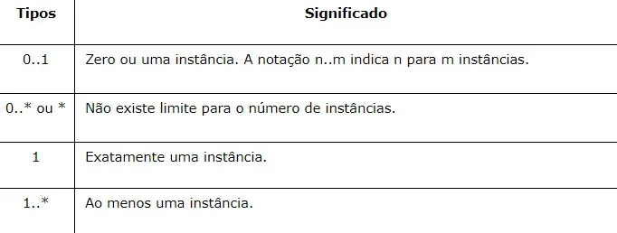
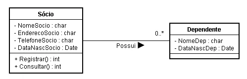
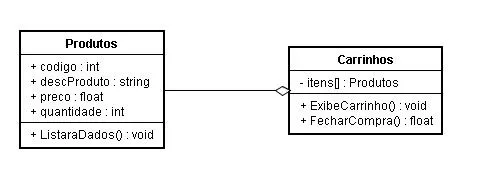
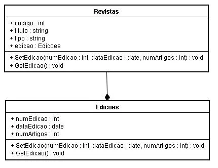
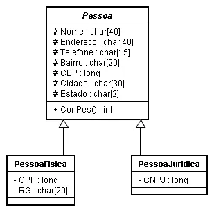
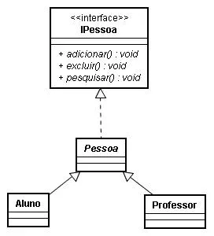

Conhecendo Diagrama de Classes
Artigos
Artigo sobre Diagrama de Classes da Lucid Chart
Videos
Vídeo sobre Diagrama de Classes da Lucid Software
Artigo sobre Diagrama de Classes:
Em diagramas de classes, as classes são representadas por uma forma retangular dividida em três partes. A parte superior exibe o nome da classe, a do meio seus atributos e a inferior suas operações ou métodos. Usa-se linhas para representar associações, heranças, multiplicidades e outros tipos de relação entre classes e subclasses. Trata-se de uma representação estática apresentando suas classes, e a relação entre os objetos.
Esse tipo de representação é bastante útil, pois serve no desenvolvimento de sistemas, definindo todas as classes que o sistema precisa ter e serve como uma forte base para a construção de outros diagramas que definem o tipo de comunicação, sequência e estado do sistema.
Componentes do diagrama de Classes
Os itens da diagramação que compõem um diagrama de classes são:
- Classe: É um elemento abstrato que representa um conjunto de objetos. Nela contém a especificação do objeto, suas características, atributos e métodos.
- Atributo: Basicamente define as características da classe, visibilidade, nome, tipo de dados, multiplicidade, valor inicial e propriedade. A visibilidade pode ser tanto pública(+) ou privada (-). Quando ela é definida como pública significa que outras classes podem ter acesso ao atributo, já quando ela é definida como privada, apenas a própria classe tem acesso. Ela ainda pode ser protegida(#) ou atribuída em pacote(~), onde o atributo é acessado pelo relacionamento da classe com a classe externa.
- Operação: Ela trata da função solicitada a um objeto, contém características como nome, visibilidade e parâmetro.
- Associação: Ela pode conter nome, a multiplicidade e o tipo de navegação, indica de onde partem as informações da classe e para onde elas irão. O diagrama de classes seria um retângulo com três linhas, onde a linha superior contém o nome da classe, na linha do meio os atributos, e na linha inferior os métodos e suas funções.
Notações possíveis:

Relacionamento
As Classes costumam possuir relacionamento entre si, com o intuito de compartilhar informações e colaborarem umas com as outras para permitir a execução dos diversos processos executados pelo sistema.
- Associações
- Simples
- Herança/Generalização
- Agregação
- Composição
- Implementação (Interfaces)
Associação
Ela descreve um vínculo que ocorre entre classes — associação binária , mas é possível até mesmo que uma classe esteja vinculada a si própria, associação unária.Representamos as associações por meio de retas que ligam as classes envolvidas.

Agregação
O objeto-pai poderá usar as informações do objeto agregado.

Composição
Pode-se dizer que composição é uma variação da agregação. Uma composição tenta representar também uma relação todo — parte. No entanto, na composição o objeto-pai (todo) é responsável por criar e destruir suas partes. Em uma composição um mesmo objeto-parte não pode se associar a mais de um objeto-pai. O todo não existe (ou não faz sentido) sem as partes ou, as partes não existem sem o todo.

Especialização e Generalização
Atributos e métodos definidos na classe-mãe são herdados pelas classes-filhas.

Interfaces
São elementos do modelo que definem conjuntos de operações que outros elementos do modelo, como classes ou componentes devem implementar.

Componentes: Carlos Barcelos, Rafaela Magnus, Wagner Brum.